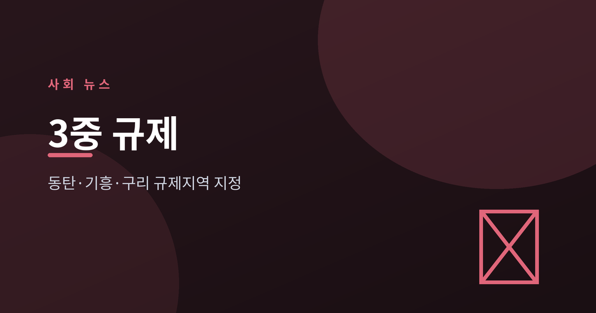
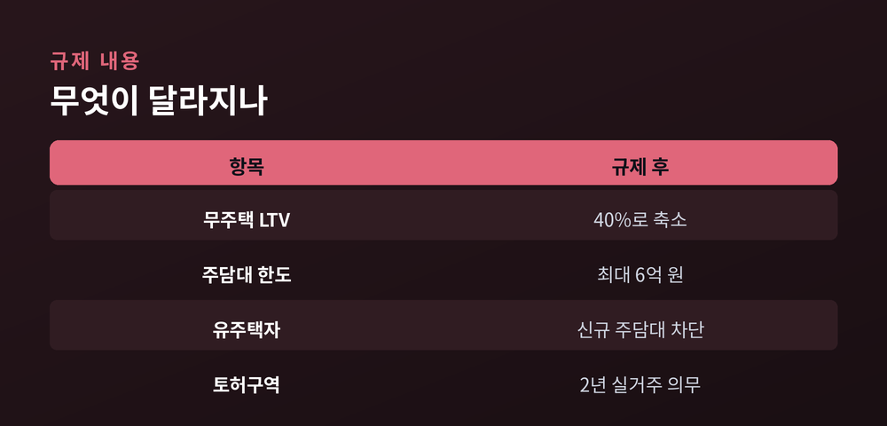
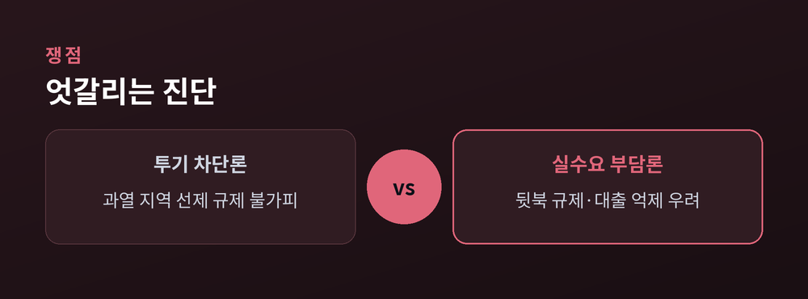
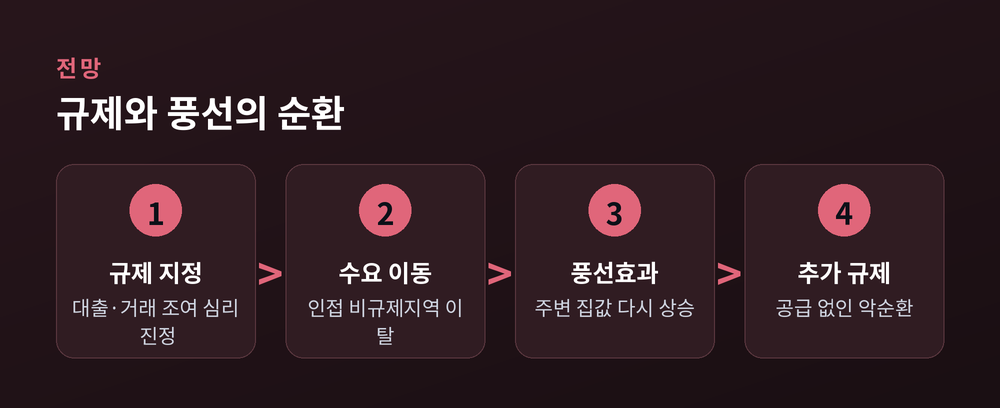

반도체·GTX 호재에 붙은 규제 카드

정부가 7월 1일부터 경기 화성시 동탄구, 용인시 기흥구, 구리시 등 3곳을 규제지역으로 새로 묶었습니다. 반도체 호황과 GTX 개통 기대감에 집값이 뛰자 대출과 세금, 거래까지 조이는 '3중 규제' 카드를 꺼낸 것입니다. 시장 과열을 잡겠다는 조치이지만, 실수요자 부담과 풍선효과를 둘러싼 논쟁도 함께 커지고 있습니다.
국토교통부는 6월 30일 주거정책심의위원회 심의·의결을 거쳐 화성 동탄구·용인 기흥구·구리시를 투기과열지구 및 조정대상지역으로 신규 지정한다고 밝혔습니다. 규제지역 효력은 7월 1일부터 발생했습니다. 경기도는 이들 3곳을 토지거래허가구역으로도 묶었으며, 이 효력은 7월 5일부터 2027년 12월 31일까지 적용됩니다.
규제 강도는 상당합니다. 규제지역에서는 무주택자의 주택담보인정비율(LTV)이 40%로 낮아지고, 주택담보대출 한도는 15억 원 이하 주택 6억 원, 15억~25억 원 4억 원, 25억 원 초과 2억 원으로 차등 적용됩니다. 유주택자는 사실상 신규 주담대가 막힙니다. 토지거래허가구역에서는 주택 매입 시 2년간 실거주 의무가 부과돼, 전세를 낀 이른바 '갭투자'가 차단됩니다. 국토부는 "투기 차단을 통한 실수요자 보호"를 지정 배경으로 설명했습니다.

이번 조치는 지난해 10·15 대책으로 서울 전역과 경기 12곳을 묶은 지 약 8개월 만의 규제지역 확대입니다. 배경에는 뚜렷한 '풍선효과'가 있습니다. 한 부동산 정보업체 집계에 따르면 수도권 주요 비규제지역의 아파트 매매거래량은 지난해 상반기 1만2556건에서 올해 상반기 2만688건으로 64.8% 늘었습니다. 6월 15일 기준 누적 주택가격 상승률은 동탄구 9.57%, 기흥구 5.99%로 경기 지역 최고 수준을 기록했습니다.
정부와 시장의 진단은 엇갈립니다. 정부는 반도체 특수와 GTX-A 개통 등 호재로 투기 수요가 몰린 만큼 선제적 차단이 불가피하다는 입장입니다. 반면 한국일보는 사설에서 "곳곳에 풍선 효과, 추락하는 부동산 정책 신뢰"라며 규제 실효성에 의문을 제기했고, 머니투데이 사설도 "규제지역 또 지정, 풍선효과 막을 수 있나"라고 지적했습니다. 이미 집값이 오른 뒤 규제한 '뒷북 규제' 아니냐는 비판과 함께, 대출을 조이면 실수요자의 내 집 마련만 더 어려워진다는 우려도 나옵니다.

단기적으로는 매수 심리가 진정될 가능성이 큽니다. 실제로 지정 발표 이후 해당 지역 거래량이 급감할 것이라는 관측이 나옵니다. 다만 전문가들은 규제만으로 시장을 안정시키기는 어렵다고 입을 모읍니다. 투기 수요가 사라지기보다 남양주·수원 권선 등 상대적으로 규제가 덜한 인접 지역으로 옮겨가는, 또 다른 풍선효과가 반복될 수 있다는 것입니다.
파이낸셜뉴스는 전문가 진단을 인용해 "반도체 라인 부동산 투기 수요를 차단하되, 풍선효과가 광범위하게 퍼지진 않을 것"이라는 신중론을 전했습니다. 결국 관건은 공급과 임대차 시장입니다. 규제 확대와 병행해 실수요 대상 공급을 늘리고 전월세 시장을 안정시키지 못하면, 규제지역 지정과 풍선효과가 쫓고 쫓기는 악순환이 이어질 수 있습니다.

집값을 잡으려는 규제와, 규제를 피해 움직이는 수요. 이번 '3중 규제'가 시장의 방향을 바꿀지, 다음 풍선을 부풀릴지는 이제부터의 공급 대책에 달려 있습니다.
참고 출처: 국토교통부, 뉴스핌, 한국일보, 머니투데이, YTN, 이데일리, 파이낸셜뉴스